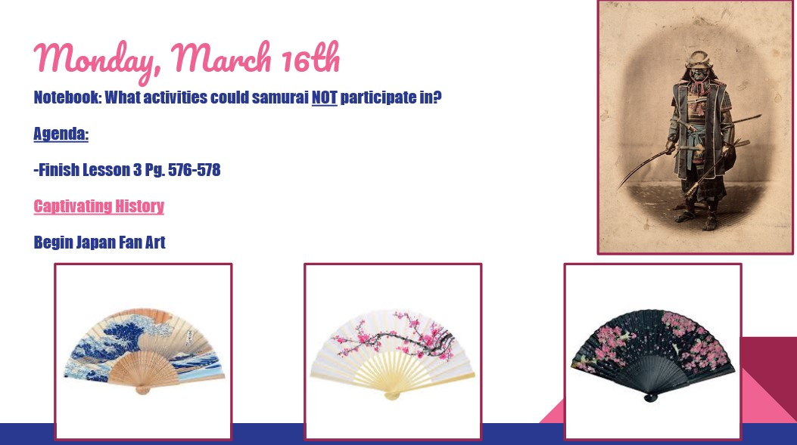

A classroom thrives off being organized, as it helps students to understand what is expected of them on a day-to-day basis. This artifact displays a slide that is shown at the beginning of each hour. Students know that when entering the classroom, they are to sit down and quietly respond to the notebook question. After giving them a couple of minutes to respond, we always have a class discussion on how people might have answered the question differently. After discussion, I always cover the agenda so that students know what to expect, so that they can be more organized, which allows the class to run more efficiently.